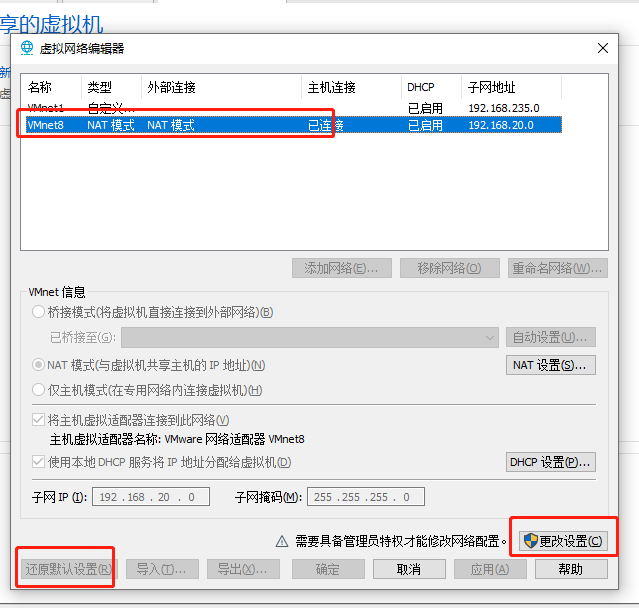
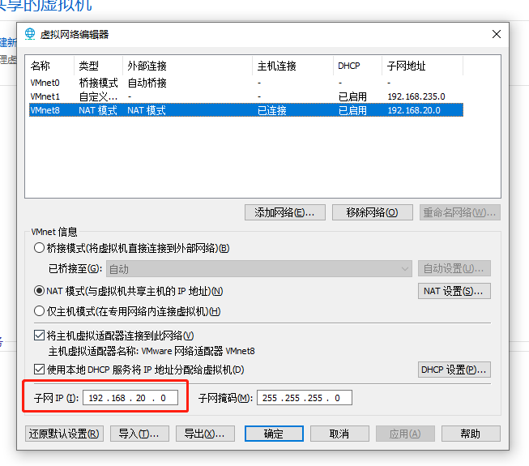
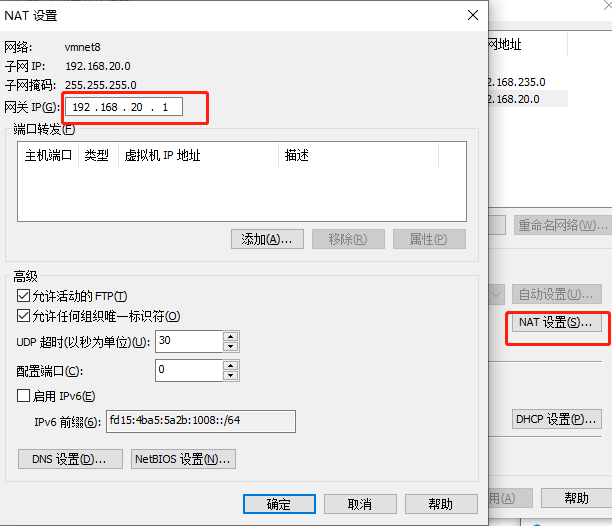
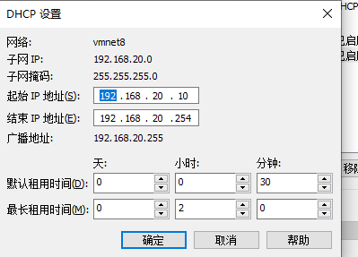

下载虚拟机：
链接：https://pan.baidu.com/s/1QET5GwML6lbN1vZ1N8M0dg 提取码：khl3
虚拟机密码： root
因为网络需要和自己机器同步，可以选择两种方式：
- 修改vmware 的网络配置，
- 修改ubuntu的网络。
修改vmware 的网络配置
在 VMware 中点击编辑 --> 虚拟机网络编辑器，然后设置如下选项：

先还原默认设置，然后将子网IP改为 192.168.20.0。

然后设置 NAT 设置：

DHCP 设置：

修改ubuntu 的网络
1、vim /etc/netplan/*.yaml
设置成自己的IP地址
2、使配置生效 netplan apply
然后记得修改 vim /etc/hosts